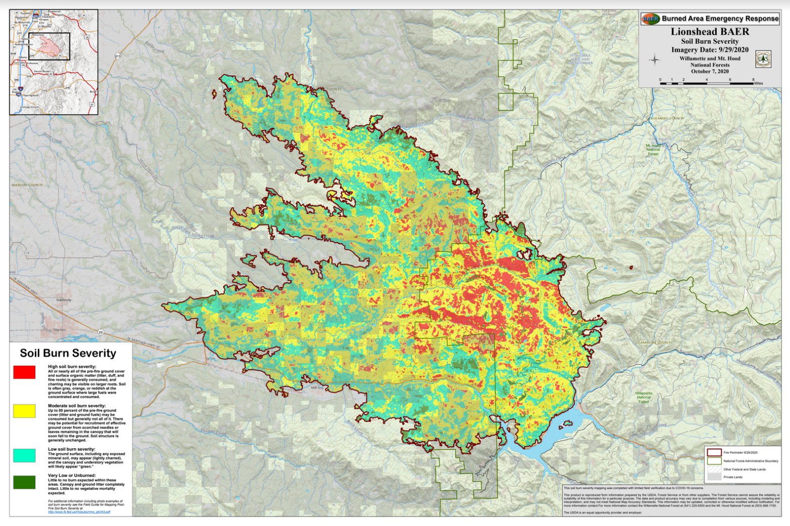
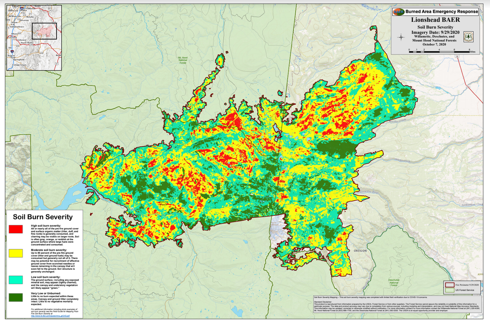

Wildfire Risk
Oregon has seen an increase in fire danger for many years, with previous notable wildfires occurring in 2018, 2012, and 2002.
The map to the left shows the overall wildfire danger throughout all of Oregon,
with the most at risk areas being the ones where we say the largest burns in 2020.
With some of the largest fires burning near major cities such as Portland, Eugene, Bend, and Salem, many
individuals were displaced from their homes as the risks from the fires grew. Analysis has found that
the fires were largely fueled by the drought, high winds, and various ignition locations during Labor Day 2020.
While wildfires are nothing new to Oregon, from 1992-2001, wildfires burned around 198,000 acres of land, but since then,
from 2002-2017, the average has been 433,541 acres. With that, if you exclude earlier years, from 2012-2020 the average amount
of land burned is 650,000 acres.
This level of burn is increasing exponentially and will only continue to do more damage as Oregon becomes more populated.
For example, from the years 2015-2019 only 93 homes were lost due to wildfires. 2020 was a huge difference with 4009 home being burned,
demonstrating the threat of these wildfires if they are to burn too close to towns and cities. It is estimated that burns cost around
$354 million, not counting the cost of what was destroyed. It is clear that action must be taken to mitigate fire risks in the future,
especially as we see our climate becoming warmer year by year. Forests must be maintained for fire risks, and infrastructure must undergo
upkeep to ensure that things like powerlines are not sparking massive fires.
Scope of Fires and Effects
During this time, fires spread from California, Oregon, and into some areas of Washington. During this time, travel to many areas was
impeaded, as highway and road closures spread throughout the state due to the worsening fires. These road closures added to the chaos of evacuations
as many were forced to find alternate routes to escape danger, as well as made firefighting much more difficult as certain areas were not accessible as
they should be
Another issue that these fires created was an extreme drop in air quality for a significant portion of the country. Air quality in Oregon and in surrouding
states dropped to hazardous levels, forcing many inside, as outisde activity became dangerous for certain populations. This came at a time when Covid was
infecting many people, leading to complications in outdoor testing as many sites could no longer operate in these conditions, with anyone who was to be working
outside recommended to be wearing at least an N-95 mask.

Satellite video of smoke produced by fires (CIRA)
Major Fires
The Beachie Creek fire was detected on August 16th, 2020. Currently, the cause of the fire is unknown.
The Lionshead fire began on August 16th, 2020 due to a lightning strike. The fire threatened cultural and natural resources and burned 264 homes.
Structual Damage
From the over 1 million acres of land that were burned, many homes and other structure were as well. As of October, 2020 the total count of homes destroyed
was at least 4,009. The fires also claimed the lives of 9 individuals. Some of the largest impacted counties include Jackson, which had 2,364 homes destroyed,
followed by Marion County with 629, and Lane County with 463. Wildfire relief was made avaliable for those effected by the fires, offering financial aid.
Recently, two lawsuits were filed against Oregon power comapnies, which blame them for the damage that was caused by the Beachie Creek fire.
This fire burned 1,300 structures and killed at least 8 people. The lawsuit claims that the company PacifiCorp had outdated infrastructure which was damaged by
high winds that they knownly ignored advisories over and failed to cut power to the area, resulting in downed powerlines starting major fires. It is claimed that
"The Beachie Creek fire could have been prevented had PacifiCorp properly maintained its equipment or instituted a public safety power outage (i.e., de-energizing),"
the lawsuits say. "Instead, PacifiCorp kept its improperly maintained power lines energized even after receiving a multitude of warnings days before high winds toppled
its improperly maintained electric infrastructure". This is just one of the ways that Oregon residents are seeking to rebuild after the crippling fires of 2020.
To the right are two interactive images which display the destruction of these fires on residential areas in Oregon.